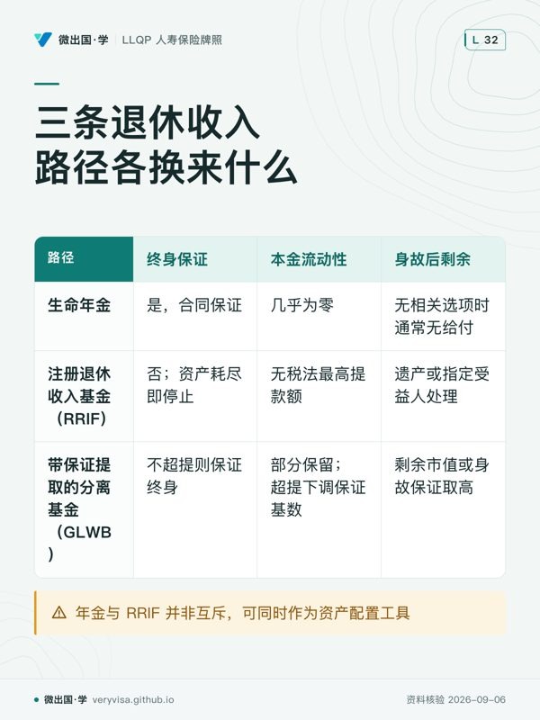

🃏 Flashcards · 3 闪卡 · 3 张 🖼 Slides · 2 幻灯 · 2 页 ✍️ Questions · 7 刷题 · 7 道
分离基金与年金 Segregated Funds & Annuities P1 必拿分 P1 Must score
ZH EN ZH + EN
先看这一章怎么考 First, how this chapter is tested
客户焦虑匹配题：给出客户的退休顾虑（如害怕活得比钱久、看重本金流动性或希望保留遗产弹性），测试能否在生命年金（life annuity）、RRIF 与带保证终身提取收益（GLWB）的分离基金之间识别各自对应的风险机制。 Client anxiety matching questions: Given a client's retirement concerns (such as fearing outliving their money, prioritizing capital liquidity, or wishing to preserve estate flexibility), test whether candidates can identify the corresponding risk mechanisms across life annuities, RRIFs, and segregated funds with a guaranteed lifetime withdrawal benefit (GLWB). 保证期与联合末存规则辨析题：设置夫妇无需留现金遗产却被加挂保证期、或联合末存年金第一位受领人身故后受益人要求领款的场景，测试保证期（guaranteed period）对月给付额的折减效应以及双生命受领的触发顺序。 Guaranteed period and joint-and-last-survivor rule discrimination questions: Setting up scenarios where a couple with no need to leave a cash estate is given a guaranteed period, or where a beneficiary claims payments immediately after the first annuitant's death under a joint-and-last-survivor annuity, test the discounting effect of a guaranteed period on monthly payments and the sequential trigger order under joint lives. 即期与递延分类陷阱题：在题干中植入分批注资或一次性存入等存款方式描述，测试考生是否清楚即期年金（immediate annuity）与递延年金（deferred annuity）的唯一划分标准是给付何时开始而非注资方式。 Immediate versus deferred classification trap questions: Embedding deposit methods such as periodic installments or lump-sum deposits in the question stem, test whether candidates understand that the sole criterion distinguishing an immediate annuity from a deferred annuity is when payments commence, not how deposits are funded. 最常丢分的陷阱（看到题干信号就警觉） Traps that cost the most marks (watch for the signal in the stem)
把递延等同于分期存钱 Equating Deferred Annuities with Periodic Deposits Trap 题干强调客户分多次注资或整笔存入，并要求判断合同属于即期年金还是递延年金。 The question stem emphasizes that a client deposits funds in multiple installments or as a single lump sum, asking candidates to classify the contract as an immediate or deferred annuity. 误以为加保证期对受领人更划算 Assuming Adding a Guaranteed Period Benefits the Annuitant Trap 题干同时出现“不需要留遗产（子女已独立）”与“希望在世时月收入最大化”，选项却带有 10 年或 20 年保证期。 The question stem mentions both 'no need to leave an estate (independent adult children)' and 'maximizing monthly income during lifetime,' yet answer choices include a 10-year or 20-year guaranteed period. 首位受领人身故即赔付受益人 Paying Beneficiaries Immediately Upon the First Annuitant's Death Trap 题干为联合末存年金（joint and last survivor annuity）且附带保证期，描述第一位受领人刚身故、子女作为受益人前来索赔。 The scenario involves a joint-and-last-survivor annuity with a guaranteed period, describing that the first annuitant has just passed away and children as designated beneficiaries come forward to claim benefits. 本章考点页：导图、要点表、7 道带逐项解析的练习 →
核实日期：2026-09-06｜考纲位置：分离基金与年金（component c2「分析产品」，占本模块 30% 权重）——年金是这一组件里唯一一类"卖的不是资产、卖的是一个承诺"的产品，也是柜台上最容易把"我怕钱不够用"和"我怕活太久"两件事讲反的地方。
与《分离基金：保证、保护与它和共同基金的真正区别》一篇互链：那一篇讲 IVIC 的保证结构与免遗嘱认证/免债权人追索，本篇讲年金的分类、定价与税务。两者共享同一套 Assuris 保护框架与同一批发行方，但解决的是完全不同的风险——分离基金保护的是"本金会不会亏"，年金保护的是"钱会不会花完人还活着"。合同申请表、受益人指定细则与理赔流程留给年金合同专篇，本篇不重复。
这一章要讲清楚一件反直觉的事：多数人以为"投资"和"退休收入"是同一个问题的两种叫法，但年金存在的全部理由，是这两者其实是两种完全不同的风险 ——投资要解决的是"钱能不能增值"，年金要解决的是"钱会不会比人先花完"。读完这一章，你要能做三件事：分清楚哪些年金分类维度可以自由组合、哪些互斥；给客户算清楚同一笔存款按 prescribed 与 accrual 两种计税方式每年要交多少税、差别到底在哪；以及在 2026 年的加拿大市场上，当客户问"年金现在还有人买吗"时，你能拿出真实还在卖的产品名和现行利率环境作答，而不是背考试口径那句写于 2022 年的抽象定义。
一、制度设计与底层逻辑：年金在赌什么 本节回答 This section answers 如何区分年金类型、寿命风险归属及特殊身故保证的运作机制 Distinguishing annuity types, longevity risk allocation, and special death benefit guarantee mechanisms 本章考题 1 Question 1
年金给付通常包含本金返还、投资收益，以及生命年金中的死亡率互助收益：较早身故者留下的资本支持较长寿者继续领取。因此不能写成每个人必定拿回全部本金加利息。定期确定年金按约定期限给付；终身年金将个人无法预知的寿命风险放进保险人的风险池。
年金分成两条完全不同的产品线，考试口径称之为 payout annuity（付息年金，也叫给付型年金）与 accumulation annuity（积累年金，业内俗称"保险 GIC"）。付息年金从一开始就是为了产生一条收入流：本金加利息按约定的频率付给年金受领人（annuitant），这是本章的主角。积累年金则完全不产生收入流，它的目的只是让保险公司代为持有并生息，到期后投保人可以选择转换成付息年金，也可以全额退保拿一次性给付、不受罚金——它更接近一份定期存款，不是本章要讲的"把钱换成收入"这件事。
寿命风险（longevity risk）由谁扛，是划分年金类型最核心的一条线 。定期确定年金（term-certain annuity 或 term annuity）付款到约定的年龄或期限为止，与年金受领人是否还活着完全无关——保险公司只是按预定进度把本息还完，如果年金受领人在期限内身故，剩余的钱按合同约定的方式付给受益人。这种产品没有把客户活过给付期的风险转移给保险人，客户仍承担期满后继续生存的收入缺口，保险公司只是一个代收代付的管道。生命年金（life annuity）则完全相反：付款持续到年金受领人身故为止，时间长短取决于这个人的实际寿命。如果这个人活得比精算表预测的长，保险公司要用自己的准备金继续付钱；如果这个人活得比预测的短，且合同既无保证期、退款选项也无幸存受领人安排，身故后不再付款——这正是生命年金能够消除"人活着、钱没了"这种恐惧的机制，代价是万一走得早，这笔钱就"打水漂"了，这也是它定价比定期年金更复杂（要依赖死亡率表）的原因。
除了这条主线，还可从三个维度审视合同组合：覆盖几条生命 （单生 single life，还是联合末存 joint and last survivor，通常是配偶双方，第一位身故后给付延续或转移给幸存者，可以设定幸存者领取比例，常见档位 100%、75%、60%、50%）；是否终身（前面讲过的定期 vs 生命）；是否带保证期（guaranteed period，常见 5/10/20 年——如果年金受领人在保证期内身故，受益人领取"保证期内应付款数减去已领款数"的差额，可以一次性拿现值，也可以分期拿；过了保证期就没有该保证期余额，其他退款或身故条款另判）。这些维度受合同结构约束：例如单生终身加 10 年保证、联合末存终身加保证期；定期确定年金本身按固定期限给付，不宜另造“联合末存＋定期＋无保证”的任意组合。另外还有两种针对身故给付的特殊保证：资本保全保证（capital protection guarantee，保障原始保费减已付年金总额后的非负余额，一次性给付叫 cash refund annuity，分期给付叫 installment refund annuity）与首付前身故保证（return of premium guarantee，如果年金受领人在第一次给付前身故，全额退还存入本金）。
保证期的存在，本质是给"寿命对赌"这件事加一层保险，而不是白送的额外奖励 。保险公司为了承担"提前身故仍要付满保证期"这份额外风险，必然要在每期给付额上打折——这条规律直接引出下一节要讲的"保证期越长、月给付越低"。
年金还有一个更精巧的组合玩法，叫保险年金（insured annuity） ：先买一份永久人寿保险（如 T-100 或终身寿险），死亡给付额等于本人身故后想留给受益人的那笔遗产；保单生效之后，再用另一笔独立的资金买一份单生终身生命年金，年金给付额至少要能覆盖这份人寿保险的保费。年金持续期间用给付支付保费；本人身故时年金终止，人寿保险的死亡给付（免税）付给受益人。这个结构的杠杆效应是：用一笔相对较小的年金本金，"买"到一笔更大的免税遗产，同时本人在世时仍能享有年金收入的一部分作为生活费。顺序不能颠倒——必须先通过核保买到人寿险，才能启动这个策略，如果申请人体检不过关买不了人寿险，整套方案无从谈起。
⚠️
"递延"不是"分期存钱"的意思
很多学员把"递延年金"理解成"分期存款买的年金"，这是错的。区分即期与递延的唯一标准是给付什么时候开始 ，与存钱的方式无关。即期年金必须用一整笔资金（lump sum）购买，且合同成立后的第一个付款周期内（一年内）就要开始给付；递延年金分"积累期"与"给付期"两个阶段，积累期内存入的钱（可以是一整笔，也可以分批）由保险公司持有并生息，给付从积累期结束时才开始。也就是说，分批注资的即期年金合同并不存在——分批存钱只会出现在积累期，一旦进入给付阶段，年金合同本身已经不接受追加存款了（若要追加，通常是买一份新的年金合同）。
节末检索小测 · 先别往回翻，凭记忆作答 Quick recall check: answer from memory before scrolling back
At age 65, Clara uses a lump sum to purchase a life annuity with a capital protection guarantee configured as a cash refund annuity. If Clara dies several years after payments begin, before her total annuity payments received equal her original premium, how is the death benefit handled?
65 岁的 Clara 用一整笔资金购买了一份附带资本保全保证（配置为现金退款年金 cash refund annuity）的生命年金。如果 Clara 在给付开始数年后身故，且当时已领取的年金总额尚未达到她的原始保费，身故给付将如何处理？
a The insurer pays the positive difference between the original premium and the total annuity payments already made as a lump sum. ✓ 正确。资本保全保证（capital protection guarantee）保障原始保费减去已付年金总额后的非负余额；当采用现金退款年金（cash refund annuity）形式时，该差额会以一次性给付（lump sum）的方式支付给受益人。 Correct. A capital protection guarantee preserves any positive difference between the original premium and total annuity payments received; under a cash refund annuity structure, this remaining balance is paid as a lump sum to the beneficiary.
b The insurer refunds the entire original premium without deducting the annuity payments Clara already collected. ✗ 错误。全额退还原始存入本金是首付前身故保证（return of premium guarantee）在第一次给付前身故时的处理方式；进入给付期后的资本保全保证必须扣除已支付的年金总额。 Incorrect. Refunding the entire original deposit without deduction applies to a return-of-premium guarantee when death occurs before the first payment; once in the payout phase, a capital protection guarantee requires deducting total annuity payments already distributed.
c The insurer continues paying the scheduled annuity installments to the beneficiary until the original premium is exhausted. ✗ 错误。按分期方式继续支付差额属于分期退款年金（installment refund annuity），而题干明确说明她选择的是现金退款年金（cash refund annuity），应一次性付清差额。 Incorrect. Continuing payments in installments until the balance is exhausted describes an installment refund annuity; the scenario explicitly states she chose a cash refund annuity, which distributes the remaining balance as a lump sum.
d No death benefit is payable because mortality pooling under a life annuity forfeits all remaining capital at death. ✗ 错误。只有在纯单生、无保证期且无退款选项的生命年金下，身故后才没有后续给付； Clara 的合同明确附加了资本保全保证，因此受益人有权领取差额。 Incorrect. Payments cease completely at death only under a pure single life annuity without a guaranteed period or refund option; Clara's contract specifically includes a capital protection guarantee, entitling the beneficiary to the remaining balance.
看答案与每个选项的解析 Show the answer and why each option is right or wrong 答案 Answer ：a
二、2026 现行政策与数字：Assuris 保护、prescribed 税务与算例 本节回答 This section answers Assuris保障额计算、计税方式差异与退休工具对比 Assuris protection limit calculations, tax treatment differences, and retirement vehicle comparisons 本章考题 2 Question 2
1. Assuris 对年金持有人的保护：考试口径旧值已过期
Assuris 是加拿大人寿保险公司破产时的行业互助保障机制——它不是政府机构，由全体人寿保险公司共同出资运营，作用是在某家保险公司无法履行给付义务时，促成保单转移到愿意承接的其他保险公司，并对转移后的给付水平提供上限保障。考试口径举的例题用的是 2023-05-29 上调前的旧标准，这个数字在 2023 年已经整体调高，比例也从 85% 改成了 90%：
同一道考试口径例题（承诺月给付 $5,000），旧口径算出 $5,000 × 85% = $4,250 ；按 2026 现行口径算，因为 $5,000 本身已经等于现行的月收入类保障上限门槛，max($5,000, $5,000 × 90% = $4,500) = $5,000（全额保护，不打折）——这不是四舍五入误差，是完全相反的结论。这条纪律必须记住：CISRO 考试口径的版次改版周期慢于监管数字调整的速度，是这门课系统性的时间差，不止年金一处（同分离基金保证章节的 Assuris 数字是同一次上调，考试口径两处都还停在旧值）。
2. Prescribed annuity vs accrual annuity：同样的年金，两种完全不同的报税节奏
年金给付里既包含本金归还，也包含利息，而利息部分才是应税所得。加拿大所得税法允许两种计税方式，机制长青、不随年份变化：
Prescribed annuity（规定式年金） ：对这里讨论的非注册给付型年金，本金返还与应税部分按 ITR s.300、s.304 判断，符合条件的等额给付通常有较平稳的应税部分。考试口径 §3.4.2 列举“不指数化、持有人与受领人关系、购买翌年底前起付”等教学要点，但原文说的是包括这些要求，不是完整的三项清单。现行 s.304(1)(c) 还规定合资格发行人和持有人、与发行人独立交易、至少每年等额给付、固定或保证期限上限、不得有合同贷款及处分限制；联合受领关系也包括条文列明的现任或前任配偶、同居伴侣、兄弟姐妹等。柜台应由发行人确认税务资格，不能只勾三个框（ITR s.304（论坛解读） ）。
Accrual annuity（权责发生制年金，也叫 non-prescribed） ：非注册积累期通常按年计入应计收益，即使尚未收到现金。进入给付阶段后，是否转为 prescribed 要在该纳税年度按 s.304 再判断；延后起付不等于终身失去资格。考试口径也明确写到收入开始后，符合条件才转 prescribed。给付期应税金额以保险人税务计算和税表为准，不能一律认定每年单调下降。
考试口径把 prescribed 与 accrual 的差别概括为纳税时点，并在简化比较中写总税额相同。实务不能承诺终身总税相同：寿命、各年边际税率、收入相关福利与折现价值都可能不同；应比较逐年税后现金流，而不是把某一教学假设变成税务保证。
算例（全部金额均为假设） ：黄女士用 $120,000 非注册资金买即期年金，假设保险人确认每月 $700 中 $500 是本金返还、$200 是应税部分，全年应税额为 $200 × 12 = $2,400。这不是用保费和年龄即可推出的真实报价。若另一个 non-prescribed 示例早年每月应税 $500、后来每月应税 $150，对应年额分别是 $6,000、$1,800；仅凭这两个年度不能证明终身总税相同。若先积累 5 年再开始给付，积累期按适用规则报应计收益，起付年重新核 prescribed 资格；不能自动认定此后永远按 accrual 计税。
3. 利率环境如何决定年金的"出厂价"
年金费率与签发当天的现行利率 直接挂钩，固定给付产品通常按合同锁定；指数化、变动给付与其他选项依约变化——这意味着"什么时候买"对最终每月能领多少钱的影响，可能比"跟哪家保险公司买"更大。加拿大央行 2026-09-02 公布的议息决定，维持政策利率（目标隔夜利率）在 2.25%，与 2026-07-15 的水平持平（Bank of Canada ）。这个数字本身不能直接套进年金定价公式（保险公司实际用的是长期债券收益率与自身精算假设，不是央行隔夜利率），但它反映的宏观利率方向决定了年金费率的大趋势：利率上升周期签发的年金，同等本金能换到的月给付通常高于低利率周期签发的年金。这条机制解释了为什么 2020–2021 年超低利率时期买入的年金，月给付会明显低于同等条件下、加息周期签发的年金——反过来也提醒代理人：不能拿几年前的一份年金报价单去说服现在的客户，报价必须重新拉取当天的现行费率。
4. 年金 vs RRIF vs 分离基金 GLWB：三条退休收入路径的取舍
图：三种退休收入路径——终身保证、流动性与遗产安排各不相同
这张表最容易被误读的一格是"解决的核心焦虑"：很多客户以为这三种工具是同一类东西的不同品牌，实际上它们对应的是三种完全不同的客户心理画像。年金与 RRIF 并非互斥选择，而是资产配置的两个工具 ——常见的实务框架是用一部分退休资产买年金锁定基本生活开销的确定性收入，其余资产留在 RRIF 保持灵活性以应对突发大额支出与遗产规划弹性，具体的配置比例属于需求分析与推荐流程的范畴，本篇不展开。
节末检索小测 · 先别往回翻，凭记忆作答 Quick recall check: answer from memory before scrolling back
Nadia, age 65, wants a retirement income solution that guarantees she will never outlive her payments even if market values drop to zero, while still allowing her to make occasional extra withdrawals if an emergency arises (understanding this reduces future guaranteed income). Which option matches her priority?
65 岁的 Nadia 希望有一套退休收入方案，既能保证即使市场价值跌至零也不会活得比钱久，又允许她在突发紧急情况时提取额外资金（她理解这会下调未来的保证收入基数）。哪个选项符合她的需求？
a A single life payout annuity with no guaranteed period. ✗ 错误。单生付息生命年金（life annuity）虽然能提供终身收入保证，但一旦开始给付，本金流动性几乎为零，无法满足她临时提取超额资金应对突发支出的要求。 Incorrect. Although a single life payout annuity provides guaranteed lifetime income, capital liquidity is virtually zero once payments begin, preventing emergency lump-sum withdrawals.
b A Registered Retirement Income Fund (RRIF) invested in growth assets. ✗ 错误。RRIF 虽然保留了较高的提款灵活性和资产增长潜力，但不提供终身给付保证，一旦账户资产耗尽给付就会停止。 Incorrect. While an RRIF offers high withdrawal flexibility and growth potential, it does not guarantee income for life; payments cease entirely if the underlying assets are exhausted.
c A segregated fund contract with a lifetime withdrawal guarantee (GLWB). ✓ 正确。带保证终身提取收益（GLWB）的分离基金解决的正是“既怕活太久、又不想完全放弃流动性”的焦虑：只要不超提就保证终身按比例提取（即使账户市值归零也继续给付），同时保留部分本金流动性，超出保证提取比例的部分仍可提取（但会永久下调保证基数）。 Correct. A segregated fund contract with a Guaranteed Lifetime Withdrawal Benefit (GLWB) directly addresses the dual concerns of outliving savings and maintaining liquidity: it guarantees lifetime proportional withdrawals (even if market value drops to zero) while preserving liquidity, though excess withdrawals permanently reduce the guaranteed base.
d An accumulation annuity held to maturity. ✗ 错误。积累年金（accumulation annuity）属于不产生收入流的定期储蓄型工具（保险 GIC），本身不提供终身提取保证。 Incorrect. An accumulation annuity is a term deposit vehicle (insurance GIC) that does not produce a retirement income stream and provides no lifetime withdrawal guarantee.
看答案与每个选项的解析 Show the answer and why each option is right or wrong 答案 Answer ：c
三、实务流程：代理人在这一步该做什么 本节回答 This section answers 购买核实、反洗钱例外边界、合同撤销限制与理赔判定规则 Purchase verification, anti-money laundering exception boundaries, contract rescission restrictions, and claims adjudication rules 本章考题 3 Question 3
购买阶段 ：先确认注册或非注册资金。注册年金给付通常全额计入收入；本节 prescribed／accrual 的本金拆分讨论不可直接套入。FINTRAC 对完全由合资格养老金直接转入资金、完全由团体寿险赔款购买，以及注册年金等分别列有特定身份核实例外，并不是这些条件必须同时满足。例外不豁免全部反洗钱工作：可疑交易仍须按对应规则处理，大额现金与虚拟货币另核其专门例外。身份核实、合同年龄证明和适当性审查是不同事项，前一项例外不自动免除后两项。
签发之后 ：传统固定给付型年金通常难以更改或退回本金，但 FCAC 明确要求核合同：可能有冷静期，也可能在起付后一段期限内允许付费取消。不能保证每份合同都有犹豫期，更不能断言除受益人之外任何条款永远不能修改。推荐前应把撤销期限、可否部分变现及费用写进比较表。
受益人指定 ：纯单生、无保证期、无退款选项的生命年金，在受领人身故后通常没有余额给付。带保证期、退款或首付前死亡返还条款的合同则可能有受益人权益；未指定有效受益人时还可能给遗产。不能仅看“无保证期”就排除所有身故利益，也不能把指定受益人写成所有带保证期年金的统一成立条件。
理赔阶段 ：定期年金到期前身故，受益人领取剩余余值；纯单生且无保证期、退款或其他身故条款的生命年金，身故后通常没有后续给付；带保证期或附加了首付前身故保证的年金，受益人可以领取相应部分。
✕
联合年金的受益人，要等两个人都走了才轮得到
联合末存年金需要指定两位年金受领人（本人与联合年金受领人），第一位身故后第二位成为唯一受领人；如果合同带保证期，受益人要等到第二位 年金受领人身故后，才可能有权领取保证期内的剩余金额，本段讨论保证期余额；另有退款等身故选项须按对应条款判断。学员容易误以为"第一位身故时受益人就能拿到一部分"，这是错的——联合年金的受益人权利要等两条生命都走完才可能触发。
节末检索小测 · 先别往回翻，凭记忆作答 Quick recall check: answer from memory before scrolling back
An agent is helping a client purchase a registered annuity funded entirely by a direct transfer from a qualified pension plan. How does the specific FINTRAC identity verification exception for this transaction affect the agent's overall compliance duties?
一名代理人正在协助客户购买一份完全由合资格养老金计划直接转入资金的注册年金。针对该交易的特定 FINTRAC 身份核实例外规定，会如何影响代理人的整体合规义务？
a It exempts the agent from all anti-money laundering reporting, age verification, and suitability review requirements. ✗ 错误。特定身份核实例外绝不豁免全部反洗钱工作，更不会免除合同年龄证明（age verification）和适当性审查（suitability review）。 Incorrect. A specific identity verification exception never exempts an advisor from all anti-money laundering duties, nor does it eliminate requirements for contractual age verification or suitability reviews.
b It applies only if the client simultaneously uses group life insurance proceeds to co-fund the same contract. ✗ 错误。FINTRAC 对完全由合资格养老金直接转入、完全由团体寿险赔款购买以及注册年金等分别列有特定身份核实例外，并不要求这些条件必须同时满足。 Incorrect. FINTRAC lists separate identity verification exceptions for direct transfers from registered pension plans, purchases using group life insurance proceeds, and registered annuities; these criteria need not be met simultaneously.
c It relieves only the specific identity verification step, while suspicious transaction rules, age proof, and suitability checks still apply. ✓ 正确。FINTRAC 的特定身份核实例外不豁免全部反洗钱工作（可疑交易仍须按对应规则处理），且身份核实、合同年龄证明和适当性审查是三项不同事项，前一项例外不自动免除后两项。 Correct. Specific FINTRAC identity verification exceptions do not waive all anti-money laundering obligations (suspicious transaction reporting rules still apply); moreover, identity verification, contractual proof of age, and suitability analysis are three separate compliance duties, and an exception in one does not waive the others.
d It guarantees the client an automatic statutory cooling-off period to cancel the annuity without fee after payments begin. ✗ 错误。反洗钱身份核实例外与合同撤销条款无关；传统固定给付型年金并非每份合同都保证有犹豫期，是否包含冷静期或付费取消条款须逐一核对合同。 Incorrect. Anti-money laundering identity verification exceptions have no bearing on contract cancellation provisions; traditional fixed payout annuities do not automatically include statutory rescission rights once in payout, and cooling-off or cancellation rights must be verified in the specific contract.
看答案与每个选项的解析 Show the answer and why each option is right or wrong 答案 Answer ：c
四、2026 市场：谁在卖，产品叫什么，柜台怎么说 本节回答 This section answers 注册资金买定期确定年金的期限要求与市场真实条款差异 Duration requirements for registered funds purchasing term-certain annuities and practical market terms
以下产品信息于 2026-09-04 从各保险公司官网或官方新闻稿直接核实（RBC Insurance、Desjardins、iA Financial Group 三家为官网/官方新闻稿一手核实）；实际报价另向保险人取得，本页不列未经保险人确认的第三方现行金额。
RBC Insurance ——官网现售三条明确命名的年金产品线：Single Life Annuity（单生年金）、Joint Life Annuity（联合生命年金）、Term Certain Annuity（定期确定年金），保证期（Minimum Payment Guarantee Period）可选 1 至 25 年，另有 Return of Premium Guarantee 选项。它解决考试口径里的哪个概念：这三个产品名直接对应第一节讲的"覆盖几条生命"与"是否终身"两个分类维度，25 年的保证期上限也比考试口径举例的 5/10/20 年更宽，说明现实产品的保证期选项比考试口径例题更灵活。
Desjardins ——2023-12-06 官方新闻稿宣布，Desjardins 是加拿大第一家向个人客户实际出售 ALDA（advanced life deferred annuity，高龄递延生命年金） 的金融机构，客户可通过 Financial Security 顾问购买。它解决考试口径里的哪个概念：2019 年预算提出 ALDA，考试口径 2022 仍以早期市场展望介绍；税法生效与公司推出产品须分开记；这条公司公告证明其 2023 年推出过产品，2026 年具体受理条件仍须取得当日报价确认，不再是纸面上的立法条文——第五节会展开讲这条从"立法"到"落地"的时间线。
iA Financial Group · FORLIFE Series ：既有官方产品页及 IAG 合同把它列为带收入保证的分离基金系列，含 Savings Stage 与 Income Stage。它可保留依合同提款的渠道，但超额提款会影响保证；不能把它当作传统不可赎回终身年金的反例，从而说所有年金都能随时取回本金。产品的“终身收入”用语相近，法律合同与资金流动性仍须分别判断。
实际月给付须取得保险人按年龄、资金来源、保证期及报价有效日出具的书面报价。同一合同增加身故保护通常降低起始收入，但本页不提供未经保险人确认的现行报价金额。
Sun Life 官网正文已核实（Sun Life（官网 2026-09-04 WebFe… ）：现售 life annuity（含 joint life，可选保证期，保证期内身故受益人领取余额）与 term certain annuity；官网原话明确"Term certain annuities bought with money from an RRSP or RRIF must extend to age 90"——用 RRSP/RRIF 资金购买的定期确定年金，给付期必须延续至客户 90 岁，不能任选一个短期年限了事。
Canada Life 单列 Income annuities 产品，说明储蓄可转换为保证收入（Canada Life ）。不同保险人的给付期、保证期、受益人及可否退款须逐项对合同，不依据行业通用名称推定某家公司当前在售的全部类型。
节末检索小测 · 先别往回翻，凭记忆作答 Quick recall check: answer from memory before scrolling back
A retiring client wants to use funds transferred directly from an RRSP to purchase a term-certain annuity rather than a life annuity. Under tax and product rules for registered funds, what duration requirement must this term-certain annuity satisfy?
一位即将退休的客户希望直接用从 RRSP 转出的资金购买一份定期确定年金（term-certain annuity），而不是生命年金。根据注册资金的税务与产品规则，这份定期确定年金必须满足什么期限要求？
a The payment term can be any fixed duration between 1 and 25 years chosen by the annuitant. ✗ 错误。1 至 25 年是市场上部分年金产品保证期（minimum payment guarantee period）的可选范围，但用 RRSP 或 RRIF 注册资金购买定期确定年金时，不能任意挑选短期年限。 Incorrect. A 1-to-25-year range represents the available minimum payment guarantee period on certain commercial annuities, but when registered funds from an RRSP or RRIF purchase a term-certain annuity, a short fixed duration cannot be arbitrarily chosen.
b The payment period of the term-certain annuity must extend to age 90. ✓ 正确。用 RRSP 或 RRIF 资金购买的定期确定年金（term-certain annuity），其给付期必须延续至年金受领人满 90 岁，不能任选一个短期年限。 Correct. Under Canadian tax rules, a term-certain annuity purchased with proceeds from an RRSP or RRIF must have a payment duration that extends until the annuitant reaches age 90.
c The payment period must be deferred until the end of the year the annuitant turns age 85. ✗ 错误。最迟于满 85 岁当年年底开始给付是高龄递延生命年金（ALDA）的起付年龄上限，不是 RRSP/RRIF 购买定期确定年金的期限规定。 Incorrect. Deferring payout until the end of the year turning age 85 is the latest commencement age for an ALDA, not a duration rule for registered term-certain annuities.
d The contract must remain redeemable at book value at any time without surrender charges. ✗ 错误。付息型定期确定年金一旦开始给付通常锁定给付进度，不能像到期积累年金那样随时无罚金全额退保，也不能把带收入保证的分离基金提款机制套用到传统年金上。 Incorrect. Once payout begins, a payout term-certain annuity locks in scheduled payments; it cannot be surrendered at book value without penalty like a maturing accumulation annuity, nor can segregated fund withdrawal mechanisms be applied to it.
看答案与每个选项的解析 Show the answer and why each option is right or wrong 答案 Answer ：b
五、历史变革：从"提案"到"真实产品"的时间线 本节回答 This section answers ALDA与VPLA的转入限额、人数门槛与起付年龄上限 Transfer caps, membership headcount thresholds, and payout commencement age limits for ALDA and VPLA
ALDA 与 VPLA 的立法背景 ：2019 年预算提出这两类安排，联邦税务规则后来落地；考试口径 2022 的市场展望不能等同于当时仍未立法。ALDA 的考试口径提案基准额为 $150,000，CRA 年度表列 2022 为 $160,000、2026 为 $180,000；另须遵守每一来源计划的 25% 转移测试，不能只看总额。给付最迟于受领人满 85 岁当年年底开始，合资格转出金额不再留在 RRIF 年初价值中。VPLA 的联邦税务条件见 ITR s.8506(1)(e.2)、(13)：设立时至少 10 名成员，并须合理预期持续达到此数；不是只凑够一次人数即可。实际推出还须符合养老金法域与计划条款。
从纸面条文到真实产品，中间隔了几年市场准备期 ：Desjardins 2023-12-06 的公告证实，ALDA 在 2023 年已有实际推出记录；不能仅凭旧公告保证 2026 年每位申请人都可购买——这条时间线提醒代理人和考生：考试口径对新制度的"尚未实施"这类判断本身也会过期，凡是考试口径写"预期""拟议"的地方，都值得单独核实现行进度，不能默认它还停在考试口径写作那一年的状态。
利率周期如何反过来影响年金的市场热度 ：考试口径写作的 2022 年正处在加息周期起点，年金费率因此走高、产品重新变得有吸引力；到 2026 年，加拿大央行政策利率维持在 2.25%（Bank of Canada ），相比 2022 年加息周期高点已明显回落。这提醒代理人："年金现在划算不划算"不能靠"当年考试口径写的市场观察"来回答，必须回到当下的费率环境重新判断——这与第二节讲的"利率环境决定出厂价"是同一套机制在不同年份的两种表现。
节末检索小测 · 先别往回翻，凭记忆作答 Quick recall check: answer from memory before scrolling back
A defined contribution pension plan administrator is establishing a Variable Payment Life Annuity (VPLA) option inside the plan. Under federal tax rules in the Income Tax Regulations, what minimum membership requirement applies to setting up a VPLA?
一家确定供款养老金计划（DC pension plan）的管理人正在计划内设立可变给付生命年金（VPLA）选项。根据《所得税条例》中的联邦税务规则，设立 VPLA 适用什么最低成员人数要求？
a It needs at least 10 members when set up and a reasonable expectation that membership will stay at or above that number. ✓ 正确。根据联邦税务条件 ITR s.8506(1)(e.2) 及 (13)，设立可变给付生命年金（VPLA）时必须至少有 10 名成员，并且须有合理预期持续达到此人数，不能只在设立时凑够一次人数了事。 Correct. Under federal tax rules in ITR sections 8506(1)(e.2) and (13), establishing a Variable Payment Life Annuity (VPLA) requires a minimum of 10 members at inception along with a reasonable expectation that membership will continuously satisfy this threshold.
b The arrangement requires at least 25 members at establishment, after which membership size is no longer monitored. ✗ 错误。25% 是高龄递延生命年金（ALDA）对单一来源计划的转入比例上限测试，而 VPLA 的最低成员人数门槛是 10 人且要求合理预期持续达标。 Incorrect. 25% is the transfer limit from a single qualifying source plan for an ALDA; the establishment requirement for a VPLA is a minimum of 10 members with an expectation of continuous compliance.
c There is no minimum membership headcount as long as total transferred capital exceeds $150,000. ✗ 错误。$150,000 是考试口径中 ALDA 的终身提案总额基准（2026 年 CRA 限额为 $180,000），与 VPLA 的风险池人数门槛无关。 Incorrect. $150,000 is the proposed lifetime cumulative benchmark for an ALDA under the exam curriculum ($180,000 under 2026 CRA rules); it is unrelated to VPLA membership thresholds.
d The arrangement requires at least 10 members, and all payments must be deferred until age 85. ✗ 错误。VPLA 虽然要求至少 10 名成员，但不能把 ALDA 的 85 岁延期上限套到 VPLA 上；VPLA 在考试口径中的起付年龄上限为 71 岁（现行税法取满 71 岁年末与转款取得 VPLA 权利年末两者较晚者）。 Incorrect. Although a VPLA requires at least 10 members, the ALDA age 85 deferral limit cannot be applied to a VPLA; the exam-benchmark commencement deadline for a VPLA is age 71 (current tax law uses the later of the end of the year turning 71 or the end of the year the right is acquired).
看答案与每个选项的解析 Show the answer and why each option is right or wrong 答案 Answer ：a
六、案例：三个最容易在柜台上讲错的场景 本节回答 This section answers 独居长寿风险配置、无遗产需求排除保证期、保险年金核保先后顺序 Longevity risk management for single retirees, omitting guaranteed periods when estate needs are absent, and insured annuity underwriting sequence 本章考题 4 Question 4
案例一：怕活太久的独居客户（温哥华，示例）
温哥华的陈先生，65 岁退休，独居，没有子女，最大的焦虑是"万一活到 95 岁，钱会不会提前花完"。他手上有 $300,000 非注册存款，理财顾问给了他两个方案：方案一是把这笔非注册资金留在自主投资账户，按自定现金流提款；非注册现金不能直接作为普通新供款存入 RRIF；方案二是全部买成一份不带保证期的单生即期生命年金。
适用规则 ：不带保证期的单生生命年金把"寿命风险"完全转移给了保险公司——只要陈先生活着，这笔月给付就会持续到他身故，无论他活到 85 岁还是 105 岁，给付金额和频率都不受影响。这正是他"怕活太久"这个具体焦虑所对应的产品。
结果 ：陈先生选择用大部分资金（$200,000）买年金锁定基本生活开销，剩下的 $100,000 留在灵活账户里应对突发支出——这是第二节年金 vs RRIF 对照表里"两者并非互斥"的真实体现。
常见错法 ：把"没有子女、不需要留遗产"和"应该把全部资金都买成年金"划等号。全部买成不带保证期的年金意味着彻底放弃流动性，一旦遇到大额医疗支出等突发需求，年金合同几乎无法变现——这也是为什么柜台推荐很少建议"全部身家买年金"，即使客户明确表示不需要留遗产。
案例二：保证期选反了方向（列治文，示例）
列治文的一对退休夫妇，丈夫 68 岁、妻子 65 岁，两人明确告诉代理人："我们已经把房子留给了独立的女儿，不需要再留现金遗产，只想要两人在世时收入尽量高。"代理人推荐了联合末存年金（50% 幸存者比例），但在填单时误加了一条 20 年保证期的选项，理由是"想让给付更有保障"。
适用规则 ：保证期的作用是在两位年金受领人都身故之后，把剩余保证金额留给受益人（通常是子女）——它保护的是受益人，不是保护年金受领人本人的给付水平。既然这对夫妇已经明确表示不需要留遗产给已独立的子女，保证期这层设计对他们没有任何意义，反而因为保险公司要为潜在的保证支出定价，每月给付会比不带保证期的方案更低。
结果 ：代理人发现问题后重新出具方案，去掉 20 年保证期，两人的月给付因此提高——用一句话概括判断原则：凡是客户目标里出现"不留遗产"和"最大化收入"这两个条件同时成立，保证期几乎总是应该被排除的选项，而不是"加上去更保险"。
常见错法 ：把"保证"两个字直接等同于"对客户更有利"，而不去问这份保证到底在保护谁。这正是这一考点最常见的思维陷阱——凡是题目或客户对话里出现"保证 XX 年"和"不留遗产"同时出现，第一步应该先划掉所有与"不留遗产"这个目标冲突的选项，而不是正向去算哪个方案数字更大。
案例三：用年金撬动一笔更大的免税遗产（本拿比，示例）
本拿比的黄先生，60 岁，想给两个已经独立的女儿每人留下一笔可观的遗产，但又不想直接拿出一大笔现金存起来不用——那样这笔钱在他有生之年就彻底失去了流动性。代理人给他设计了一个保险年金结构：先用一部分资金买一份 $500,000 死亡给付的 T-100 保单（月保费约 $1,000），核保通过并保单生效之后，再用另一笔资金买一份单生终身生命年金，假设税后月给付 $1,300，覆盖 T-100 月保费 $1,000 后余 $300；这不是产品报价。
适用规则 ：保险年金结构的核心是"用年金的收入去养一份人寿保险"，年金持续期间用给付支付保费；黄先生身故时，年金合同终止，人寿保险的死亡给付（免税）直接付给两个女儿。是否提高净遗产取决于两份合同的成本、健康核保、税率和寿命，不能预先保证死亡给付一定远高于投入资本。
结果 ：黄先生用一部分资金完成了遗产规划目标，同时年金的其余部分（超过覆盖保费所需的那一截）仍可以作为他本人在世时的生活费来源，没有把全部资金锁死。
常见错法 ：把购买顺序颠倒——如果先买年金再申请人寿险，一旦体检核保不通过，买不了人寿险，整套杠杆结构就无法成立，之前买的年金也无法追溯撤销。必须先完成人寿险的核保，确认能买到保险，再启动年金这一步，这条顺序在实务里不能颠倒。
节末检索小测 · 先别往回翻，凭记忆作答 Quick recall check: answer from memory before scrolling back
Victor, age 65, is single with no children and has $300,000 in non-registered savings. His primary fear is running out of money if he lives to age 95. Why would an advisor avoid recommending that Victor put the entire $300,000 into a single life annuity with no guaranteed period?
65 岁的 Victor 单身且没有子女，拥有 $300,000 非注册储蓄。他最大的恐惧是如果活到 95 岁钱会提前花完。为什么顾问不会建议 Victor 把全部 $300,000 都买成一份不带保证期的单生生命年金？
a Because non-registered funds can instead be contributed directly as new deposits into a RRIF for tax-free growth. ✗ 错误。非注册现金不能直接作为普通新供款存入 RRIF，这是违反注册账户资金来源规则的错误说法。 Incorrect. Non-registered cash cannot be contributed directly as a new regular deposit into an RRIF, as this violates registered plan funding rules.
b Because locking 100% of his savings into a payout annuity eliminates liquidity, leaving no accessible cash for unexpected large expenses. ✓ 正确。虽然不带保证期的单生生命年金能转移寿命风险，但把全部身家买成付息年金意味着彻底放弃流动性（一旦开始给付几乎无法退保变现）；合理做法是用一部分资金（如 $200,000）买年金锁定基本开销，保留其余资金（如 $100,000）在灵活账户中应对突发大额支出。 Correct. While a single life annuity without a guaranteed period effectively transfers longevity risk, allocating 100% of one's liquid assets eliminates liquidity (in-force payout annuities cannot be readily surrendered for cash); a balanced approach uses a portion (e.g., $200,000) to lock in essential lifetime expenses while retaining the remainder (e.g., $100,000) in accessible vehicles for unexpected emergencies.
c Because a single life annuity without a guaranteed period stops paying once the annuitant reaches age 85. ✗ 错误。生命年金（life annuity）的给付会一直持续到年金受领人身故为止，无论他活到 85 岁、95 岁还是 105 岁，给付金额和频率都不会停止。 Incorrect. Payments from a life annuity continue until the annuitant's death; whether the annuitant lives to age 85, 95, or 105, payments never terminate during their lifetime.
d Because tax rules prohibit someone without a spouse or children from purchasing a life annuity without a guaranteed period. ✗ 错误。税法与保险合同规则从未要求单身无子女人士必须附加保证期；相反，无遗产需求的客户买年金时通常不选保证期以换取更高月收入，只是不应投入全部流动资金。 Incorrect. Neither tax regulations nor insurance contract rules require single individuals without dependents to include a guaranteed period; clients with no estate legacy needs typically omit guaranteed periods to maximize monthly income, though they should avoid committing all liquid savings.
看答案与每个选项的解析 Show the answer and why each option is right or wrong 答案 Answer ：b
七、考试陷阱与考场与现行对照清单 本节回答 This section answers 八大高频考场失分陷阱与新旧监管数字的双口径作答原则 Eight high-frequency exam traps and dual-benchmark answering principles for historical versus current regulatory figures
"递延"指的是给付何时开始，不是存钱方式 ——分批注资只会发生在积累期，不存在"分批注资的即期年金"。题目里出现"分几次存入"字样，不能直接推断这份合同就是递延年金，要看给付到底何时开始。保证期是"两条生命共用一份"，不是每人各自重新计满 ——联合末存年金带保证期时，保证期从合同约定的年金给付起始日计算，不会因为第一位年金受领人身故而重新起算给第二位。纯单生、无保证期也无退款等身故选项的年金，受领人身故后通常停止给付；先看全部身故条款，不能仅凭“无保证期”排除退款利益。
考试口径列举的 prescribed 要点不是完整法规清单；现行按 ITR s.304 逐项判断，递延积累期与起付年度分别处理，不能永久锁定为 non-prescribed。
Assuris 保障上限有考试口径旧值与现行新值两套答案 ——月收入类保护考试口径旧值 $2,000/85%，现行值 $5,000/90%；同一道例题两个口径答案完全不同（$4,250 vs 全额 $5,000），题目未标注"按 2022 年标准"一律用现行值。ALDA 最迟满 85 岁当年年底起付，2026 总额限 $180,000 且另有每计划 25% 测试；VPLA 看 s.8506 的给付条款、人数及持续预期，不能把 ALDA 的延期年龄套到 VPLA。考试口径列 71 岁起付上限；现行 ITR s.8502(e)(i)(C) 则取满 71 岁年末与转款取得 VPLA 权利年末两者较晚者，实务另核计划适用规则。
保险年金（insured annuity）的购买顺序不能颠倒 ——必须先买人寿保险、核保通过后再买年金，题目如果描述"先买年金再申请人寿险"，这个操作顺序本身就是错误的，与体检能否通过无关。联合年金身故给付要等第二位年金受领人身故才可能触发 ——题目容易设置"第一位年金受领人身故，受益人要求领取保证期余额"的场景，正确答案是受益人此时无权领取，要等到第二位也身故之后才可能有此权利（这里仅指保证期余额，其他退款保证另核）。
节末检索小测 · 先别往回翻，凭记忆作答 Quick recall check: answer from memory before scrolling back
When reviewing a single life annuity contract that has NO guaranteed period, an agent tells the client that zero death benefit can ever be paid if the annuitant dies early. Why is this statement potentially inaccurate?
在审阅一份不带保证期（no guaranteed period）的单生生命年金合同时，代理人告诉客户，如果年金受领人早逝，绝不可能产生任何身故给付。为什么这一说法可能不准确？
a Because the contract might still include a return of premium guarantee prior to the first payment or a capital protection refund option. ✓ 正确。判断身故利益时必须审阅全部身故条款，不能仅凭“无保证期”就排除所有身故给付：合同仍可能附有首付前身故保证（return of premium guarantee）或资本保全退款选项（cash/installment refund annuity）。 Correct. Determining death benefits requires examining all policy provisions rather than assuming zero payment solely from the absence of a guaranteed period: the contract may still include a return-of-premium guarantee prior to first payment or a capital protection refund option (cash or installment refund annuity).
b Because every life annuity in Canada automatically includes a mandatory 5-year statutory guaranteed period. ✗ 错误。加拿大并无强制 5 年法定保证期的规定，纯单生、无保证期且无退款选项的生命年金在受领人身故后确实停止给付。 Incorrect. Canada has no statutory provision mandating a 5-year guaranteed period; a pure single life annuity without a guaranteed period or refund feature does indeed cease payments immediately upon the annuitant's death.
c Because Assuris steps in upon early death to refund 85% of the unused principal to the estate. ✗ 错误。Assuris 保障的是人寿保险公司破产时的给付承诺，而不是在年金受领人早逝时退还本金。 Incorrect. Assuris protects policyholder benefits in the event of life insurer insolvency; it does not refund principal upon an annuitant's premature death.
d Because non-registered prescribed annuities are required by the Income Tax Regulations to refund unrecovered capital at death. ✗ 错误。规定式年金（prescribed annuity）是所得税法下的本息拆分计税方式（ITR s.300/s.304），并不强制要求合同附加身故退还本金条款。 Incorrect. Prescribed annuity taxation is a method under the Income Tax Regulations (ITR sections 300 and 304) for splitting capital and taxable interest; it does not mandate a contractual provision refunding capital at death.
看答案与每个选项的解析 Show the answer and why each option is right or wrong 答案 Answer ：a
术语双语表
年金把"能不能活到很老"这个每个人都会面对、却谁也答不上来的问题，转手交给了保险公司用大数定律去承担；换来的代价是流动性，换不来的是"划算不划算"这个只有回顾一生才能知道答案的问题。下一步，把本章的三类年金分类与 prescribed/accrual 税务判断拿到题库里练手，练习池与模考专属池分开，模考池的题不会提前见过。年金合同的申请表填写、受益人指定细则与理赔流程留给年金合同专篇继续展开，那一篇会讲到 POA 代理人在理赔环节的权限边界——与本篇的三类年金分类放在一起读，才是完整的"这份年金到底怎么运作"的答案。
本页知识卡 不看正文也能拿到这一节的核心内容：先看导读，再看图。点图放大，左右翻页。
放大 ⤢ 两种方式的核心差别是纳税时点，不应承诺终身总税相同。 先看 先看纳税发生在领钱时，还是资金仍留在合同里。易漏 开始付款较晚，不代表之后只能沿用原计税方式。下一步 涉及本金与收益拆分时，找发行方确认，不自行估算。详情与分享 → 
放大 ⤢ 三条路径是在保证、可动用性与身后安排之间做不同取舍。 先看 先看你换到的是确定收入、提款弹性，还是传承空间。易漏 收入承诺更强，不代表本金仍同样可动用。下一步 做情景题时，把客户目标映射到对应取舍维度。详情与分享 → 本站依据官方原文自撰 · 出处见正文链接